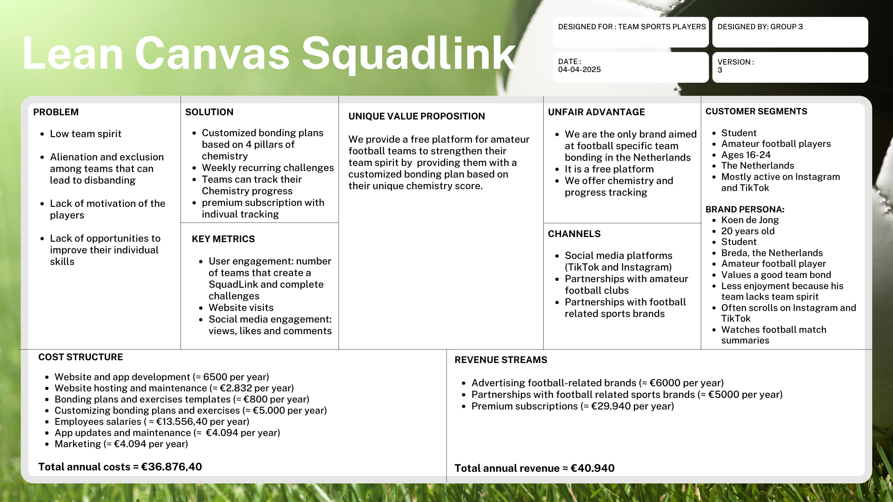

General Information
This branded website is publicly available at squadlink.github.io/SquadLink
This website was created by:
- Wessel Moeleker (ID: 234162)
- Rodney Peerkhan (ID: 230657)
- Yasmijn Engelaar (ID: 233359)
- Sanna van Vliet (ID: 224334)
Content
Please clarify here the match between students and pieces of content. Make sure that you provide a link to the correct page within the website
| # | Student ID | Value | Name and link of content |
|---|---|---|---|
| 1. | 234162 | Collaboration | Value - Collaboration |
| 2. | 230657 | Enjoyment | Value - Enjoyment |
| 3. | 233359 | Team Spirit | Value - Team Spirit |
| 4. | 224334 | Motivation | Value - Motivation |
Vision Statement
In a world where a lack of team spirit causes dismay and the disbanding of teams, we believe that fostering b bonds between players will result in a closer-knit group that will have more enjoyment and motivation for their sport.
Persona

Production
Design Elements
Please provide a list of design elements alongside their justifications:
Colour palette
-
#00BAE0:
This vivid blue communicates trust, unity, and loyalty, which are essential to building team chemistry. It brings a sense of calm and focus, reinforcing a reliable and stable team environment. Blue is also often used in sports and tech, making it perfect for SquadLink that combines tech with sports. -
#1C14EF:
This deep, bold indigo adds a touch of intensity and passion, aligning with the competitive nature of football. It’s modern, sleek, and conveys a sense of power and determination, encouraging motivation and strength within teams. -
#F08400:
This bright orange ties in with our target audience being Dutch football players. Orange evokes energy, warmth, and togetherness, making it a perfect color for representing team spirit and collaboration. It also serves a unique accent color that makes the brand pop. -
#F0AC5E:
This warm, golden orange tone balances the b colors with a friendly, inviting feel. It reflects enjoyment, positivity, and approachability. It will remind teams that having fun and connecting is just as important as winning.
Font choices
-
Bungee-regular and Bungee-inline-regular:
These fonts are bold, playful, and expressive, perfect for headlines or logos, which is also why we used them for these instances. The blocky, urban style fits the energetic vibe of football teams, while also giving the brand a confident and youthful presence. -
Oswald-regular and Oswald-light:
Clean and condensed, these fonts bring readability and structure to the brand, which is crucial for our digital brand. It adds a modern and professional tone to our site, reinforcing the idea that team building is serious business, while still remaining stylish. These fonts were mainly used for subtitles -
Montserrat-regular:
This font is sleek, geometric and very versatile. It helps balance the more expressive Bungee fonts with clarity and elegance, making our brand feel progressive, approachable, and grounded. We used this font for our regular text.
User interface patterns
Our website shows a consistent grid layout to ensure visual harmony and the ease of navigation for users. The grid system enhances readability and provides a predictable structure, which is essential for user engagement.
The "Getting Started" page is a perfect example of our clear outline for users by the step-by-step process displayed on the page in a carousel. The linear structure guides users through the journey of SquadLink with ease. The user interface is also interactive for users, for example the chemistry quiz provides an intuitive and straightforward user experience. The design suggests its own use, making it clear for users how to interact with it, the structure of the quiz also promotes our brand in the best way possible with self-reflection and teamwork combining powers.
Structure of navigation and content
Our website has a navigation bar that includes links to each of our essential sections to make it easy for users to navigate our website. This layout follows the recognition over recall principle, allowing users to easily find and access information without memorizing site structure. The content is strategically divided across pages.
Users start on the Home page that provides an overview. Next up is the Our Goal page which contains an in-detail explanation of our mission and vision as well as providing information on the platform that is SquadLink. The third page in the navigation bar is the Getting Started page that showcases the user onboarding process and gives users the chance to interact with the site in a fun quiz. Next up is the FAQ page that provides users with answers to common questions. Lastly to round it up there is the Contact page that showcases our communication channels in case users have any questions left after having seen our entire site.
Website design and values and personality of the brand
The website perfectly fits the values and personality of our brand SquadLink, for example the collaborative quiz and emphasis on shared experiences foster a sense of unity and contribute to our value of team-spirit. The step-by-step guidance and immediate feedback mechanisms encourage continued engagement and keep the user motivated, which suits our motivation value. The feature to sign up and see the results of the test fit the value of collaboration as it promotes participation with SquadLink. The use of vibrant colours and interactive elements creates an engaging and enjoyable user experience and fits the value of enjoyment.
Website design and marketing and communication strategy
Within the marketing campaign, we used several videos that showcased either amazing or horrible team chemistry (and sometimes a comparison of both). Then we accompanied these videos with a call to action to make the team chemistry quiz on the website to determine how good our viewers’ own team chemistry was.
Since this was the main call to drive traffic to the website, we made sure there was a button on the homepage to immediately go to the team chemistry quiz. This way our viewers didn’t have to search for the quiz, and we immediately delivered what was promised, which fosters trust, loyalty and an overall better brand connection.
How does website design help showcase the unique value proposal of the product
The website effectively communicates SquadLink’s unique offering: a chemistry quiz that leads to a customized bonding plan for amateur football teams. By having a test quiz and providing clear calls to action, users immediately understand the service’s purpose and benefits. This clarity ensures that the product’s features directly address the target audience’s needs and desires.
Credits
External UX Code
-
Footer 09 from Colorlib
Images and videos
-
Hero video on Landing Page is a Video by Tima Miroshnichenko from Pexels
-
First image on Landing Page is a Photo by Donnycocacola on Unsplash
-
Second image on Landing Page is a Photo by Lars Bo Nielsen on Unsplash
-
First image on Getting Started Page is a Photo by Vikram TKV on Unsplash
-
Second image on Getting Started Page is a Photo by Marcel Strauß on Unsplash
-
Third image on Getting Started Page is a Photo by Fauzan Saari on Unsplash
-
Hero video on Our Goal Page is a Photo by Ahmadreza fs on Pexels
-
Team spirit image on Our Goal Page is a Photo by Anastasia Shuraeva on Pexels
-
Enjoyment image on Our Goal Page is a Photo by Anastasia Shuraeva on Pexels
-
Motivation image on Our Goal Page is a Photo by Pixabay on Pexels
-
Collaboration image on Our Goal Page is a Photo by Tima Miroshnichenko on Pexels
Testing Report
Goals
Our goals were to get insights in the Effectiveness, Efficiency, Engagement, Error Tolerance and Easiness to learn of our website. By using these 5 anchor points, we could determine where some adjustments were needed. Either visually, or technically, this (and the only) round of usability testing served to improve the site overall.
Participants
- Stephen Raas
- Remik Lis
- Thijmen de Jonge
- Sven Groeneveld
Test Setting
All tests were conducted remotely in the participants’ natural environments using their own devices. A live version of the SquadLink website and scenario-based instructions were provided.
Test Protocol
Participants received a role-specific scenario and were instructed to speak their thoughts aloud while navigating. Sessions were recorded for screen and audio, followed by a short debrief interview. Due to a technical error, one video has no screen recording, but does contain the recorded audio.
Testing Results
Positive Aspects (Ranked in Importance)
- Brand Identity & Visual Appeal: Friendly, professional look praised by most users.
- Clear Navigation: Users found most key content without issues.
- Approachable Language: Welcoming tone suitable for target audience.
Negative Aspects (Ranked in Importance)
| Rank | Issue | Description |
|---|---|---|
| 1 | Missing Coach/Business Info | No dedicated content for coaches or partners. |
| 2 | No Youth Safety Section | No content for parents or youth safety assurance. |
| 3 | No Community Features | Missing blog, forum, or deeper fan interaction tools. |
| 4 | No Explainer Video | Homepage lacks a quick overview or demo video. |
| 5 | Incomplete Form Feedback | Forms don’t confirm submission or errors. |
Improvements
| Change | Reason | Status |
|---|---|---|
| Form Feedback Confirm Message | Increases trust and clarity. | Done |
| Coach-Friendly Messaging | Better serves amateur team leaders. | Future improvement |
| Blog/Community Section | Boosts engagement and retention. | Future improvement |
| Homepage Explainer Video | Simplifies onboarding. | Future improvement |
| Youth Safety Content | Builds trust with parents and schools. | Future improvement |
Summary
- Effectiveness: Most users completed their goals, with some needing extra time for specific info.
- Efficiency: Navigation is mostly intuitive, though some content needs better placement.
- Engagement: Design and tone are appealing; additional interaction options would help.
- Error Tolerance: Minor issues now improved with better feedback for forms.
- Ease of Learning: First-time users easily adapted to the structure and layout.
This round of testing provided valuable insights into the site’s strengths and areas for improvement. By addressing both functional and emotional UX aspects, SquadLink can offer a ber, more inclusive digital entry point for all users.
Marketing
Context of campaign and promotional activities
General Information
SquadLink is a platform built to improve chemistry within football teams, with this we aim to make football even more fun than it already is. Our product works as follows: all team members join SquadLink and fill in a (team) chemistry quiz. Once all results are in, SquadLink provides a custom bonding plan with exercises that help the team with the areas that need the most improvement. After doing these exercises, their team chemistry bar in the app will go up and they will get new exercises to improve the (now) worst part(s) of their team chemistry.
Our brand's core focus is making football more enjoyable, we have good reasons to believe we can do this by improving team-spirit within teams, since a lack of it was mentioned as the biggest "problem” most of our interviewees (existing out of our target group) experienced. Therefore, our marketing campaign will also focus on spreading the benefits of a better team-spirit and collaboration. In addition, we also want to spread awareness of who we are as a brand and how we help with fostering this team-spirit and collaboration. Therefore, the overarching message that we would like to convey (although not directly mention) with(in) our campaign is: “Football is better when the bond with the people you do it with is better! We are here to help with just that.” This message conveys the importance of team-spirit and collaboration but also conveys that we are here to help with it, since we are still trying to generate awareness for our brand as well.
Our target group exists of:
-
Amateur football players
-
Aged between 16 - 24
-
Based in the Netherlands
-
Mostly active on Instagram, TikTok and YouTube
-
Watches (summaries of) football matches
Our Marketing Campaign
Before we started this campaign we came up with objectives. After doing in depth interviews (of which the transcripts and the audios can be found under "Marketing Folder” in the appendix) with people from our target group, we found that they mostly used modern media, social media platforms YouTube, Instagram and TikTok were mentioned the most. Additional research from Conboy (2024) suggested our target group prefers short videos. Therefore, we decided to focus on Instagram and TikTok, on which short content thrives. (Dey, 2024)
With these platforms in mind, we came up with the following reach objectives:
-
Reach 300 people on Instagram by the 13th of April
-
Reach 1000 people on TikTok by the 13th of April
With these objectives in mind, we delved deeper into how we could best reach our target group. Here is a short overview of the most important things we found:
-
Our target audience prefers short clips and highlights over live matches. (Thinkhouse, n.d.)
-
Tapping into popular TikTok/Reels challenges (e.g. trick-shot challenges, hashtag trends) can quickly engage this audience. Such “viral, shareable content” on Reels/TikTok helps reach a wide audience of young football fans. (De Beukelaer, 2025)
-
Funny videos and football memes draw high engagement from our target group. These formats are “highly shareable” and help increase reach. (Dey, 2024)
We also had an objective for affect:
-
We want them to feel part of a community.
We want our target audience to feel part of a community. Although this was mostly resembled in the copy of our site, we also tried to engage with the audience with asking questions in our social media captions.
Then we also had two response objectives:
-
We want at least 5 likes and 1 comment by the 13th of April
-
We want our target audience to check out the website, we will aim for 10 visits by the 13th of April
The likes and comments would give us a sense if our content was actually engaging enough and getting them to visit the site would show that they were engaged/interested enough and were ready to become part of the community.
After the objectives (and how we could best reach them) were clear, we came up with several content ideas that will all be mentioned and justified in the content calendar. (Linked under “Marketing Folder” in the appendix as well.)
Result of the Campaign
We reached all of our objectives, most of them by quite a lot. Our reach objectives were completely crushed, both for Instagram and TikTok and we got a lot more likes than expected. However, our comment objective was only just reached and not surpassed.
Learning Points
Week 1 (17/03 – 23/03)
Our Actions:
For our very first campaign week, we started with three introduction posts to increase our brand awareness and give our audience a clear vision of who we are as a brand and what we offer. All three posts are carousel posts in the colours of our brand. We also chose to add music. We posted consecutively on Tuesday, Wednesday and Thursday to get our brand out there as soon as possible. Each of these days we posted at 19:00 in the evening, based on our problem interviews. The first carousel talked about who we are as a brand. The second provided tips for better team chemistry, which is the core of our brand. The final carousel gave a clear step by step plan on how to become a part of SquadLink. Each post ended with one clear call to action.
Results:
| Total # | TikTok | |
|---|---|---|
| Total views of the new posts | - | 2629 |
| Total engagement of the new posts (likes, comments, shares, saves) | 20 | 11 |
| Total accounts reached | - | 2380 |
Unfortunately we were not seen as a professional account yet in this first week on Instagram, so we do not have the viewer analytics for this week. For TikTok we had expected these posts to get around 100 views each as our account was completely new. To our surprise they did very well with 500-1100 views each, causing us to already reach our objective for TikTok. The engagement was what we had anticipated and still pretty low.
What we learned:
The short and clear carousels posts with music did very well on TikTok as an introduction to our brand. Unfortunately, we cannot be sure for Instagram, though based on engagement it did well. We learned that some of our objectives were reached much faster than we expected when setting up the campaign, meaning that for our future planning we can make new, higher objectives.
Week 2 (24/03 – 30/03)
Our Actions:
In the second week we decided to change our content as our introduction phase was over. We focused on our target audience and started posting memes based on online research of our target audience (mentioned in the campaign overview and content calendar). We decided on 2 posts per week, one regular meme on Thursday and a meme in reel format on Saturday to variate and test our content types. As our last posts with music did well, we used this again. As a change we added a call to action in our captions which we had not done in the previous week. We also tried out two different times to test if this made a difference. On Thursday at 10:00 and on Saturday at 19:00 still.
Results:
| Total # | TikTok | |
|---|---|---|
| Total views of the new posts | 355 | 335 |
| Total engagement of the new posts (likes, comments, shares, saves) | 24 | 3 |
| Total accounts reached | 269 | 276 |
While we could not compare the Instagram analytics to week 1, our views and engagement were better than expected, and also already reached our objective. Our views on TikTok were lower than the carousel posts but accurate to our expectations before starting the campaign.
What we learned:
The reel meme did better on both platforms than the regular meme. It also confirmed our earlier interview-based decision of posting at 19:00. So far, the reels seem to work great with our audience. Whether the success was mostly impacted by the day, time or type of content is still unclear. To be sure about the success of these factors, we followed a similar posting pattern the third week, with a different meme and reel, and by posting at different times. Lastly, for the regular meme we had purposely picked a song popular among Genz ‘Not like us’ by Kendrick. However, did not seem to have any positive effect.
Week 3 (31/03 - 06/04)
Our Actions:
We posted another regular meme on Thursday at 19:00 and a reel on Saturday testing a different time,15:30. For the second half of our campaign we also wanted to test whether making use of hashtags and stories had any significant influence on our views and engagement. Both posts had multiple hashtags in the caption, and the post on Thursday was accompanied by a story to test the difference on this post in comparison to the other without story.
Results:
| Total # | TikTok | |
|---|---|---|
| Total views of the new stories | 12 | - |
| Total views of the new posts | 5098 | 802 |
| Total engagement of the new posts (likes, comments, shares, saves) | 64 | 28 |
| Total accounts reached | 2992 | 728 |
The results were very surprising. The regular meme did great on TikTok with 796 views, but not on Instagram with just 25. On the other hand, the reel did extremely well on Instagram with our highest number of 5073 views, while it did not do very good on TikTok.
What we learned:
So far, the reels have been doing very well on Instagram and average on TikTok, while the regular memes differ a lot with each post and platform which makes the success rate more irregular and not reliable. For this reason, we decided to focus on only reels for the final promotion week. We believe that with the sudden increase in views, the use of hashtags might have made a significantly positive influence.
Week 4 (07/04 -13/04)
Our Actions:
In our final week we made sure to really look at what has worked and not worked so far in the first 3 weeks of our promotional campaign. Since the reels have repeatedly proven to be a success, we changed our posts to a reel on both days with the same hashtags. From the analytics we can say that 19:00 works the best on average, so both posts are now posted at this time. We also posted a story for each reel.
Results:
| Total # | TikTok | |
|---|---|---|
| Total views of the new stories | 20 | - |
| Total views of the new posts | 1742 | 131 |
| Total engagement of the new posts (likes, comments, shares, saves) | 91 | 6 |
| Total accounts reached | 1496 | 107 |
Once again, unexpectedly high views and engagement on Instagram and average on TikTok. Compared to the other weeks the results for Instagram are consistently high.
What we learned:
The reels have proven to continuously do well on both platforms, specifically on Instagram, as well as our posting time and days. Since we started using hashtags in the third week our posts have gotten a lot more views and engagement. Posting stories on the same days did not make any significant difference.
Total results after our 4-week campaign
| Total # | TikTok | |
|---|---|---|
| Total amount of followers | 25 | 2 |
| Total views of all posts | 7154 | 4085 |
| Total engagement of all posts (likes, comments, shares, saves) | 193 | 51 |
| Total accounts reached | 4551 | 3484 |
Despite our views and engagement, we did not manage to achieve a big following. Overall, far better result that first expected.
What we would do differently:
Looking back at our entire campaign we realized some things that we have not tested out yet and could cause us to have missed opportunities. For one, we would switch up the posting days more. While we tried out many different things, we only posted on different days in our first week, and afterwards only on Thursday and Saturday. We would try out different variations of days to be sure that our chosen posting schedule truly works best for our target audience. Secondly, we would post more often than twice a week to see if this increases our brand awareness and overall engagement. The last thing we would do different is our stories. We only posted stories on the days of our actual posts. If we did it again, we would post stories on different days to cause repeated exposure.
Future Planning
If we were to extend our campaign for another 8 weeks, we would make changes based on our findings from our previous campaign. First, we would start by making new objectives as we reached the last ones in the span of 1 week. In this situation we would start our new campaign on the 21st of April and end on the 15th of June.
Reach objectives
- Reach 8.000 people on Instagram by the 15th of June 2024
- Reach 6.000 people on TikTok by the 15th of June 2024
We believe this is realistic based on the fact that we reached 4551 separate accounts on Instagram and 3484 on TikTok within 4 weeks, and because we now have better insights on what works.
Affect objectives
- We want our target audience to feel part of a community by reaching 50 followers on Instagram and 15 on TikTok by the 15th of June 2024
We believe the success of whether our audience feels part of our community is measurable by actually following our brand and in that way repeatedly engaging with us.
Response objectives
- We want 300 likes on Instagram by the 15th of June 2024
- We want 100 likes on TikTok by the 15th of June 2024
We think these are realistic based on our previous analytics.
The Campaign
As mentioned in what we would do differently, there are a few things we would alter when doing a new 8-week promotional campaign. We would post more frequently to increase brand awareness and viewer engagement. Instead of 2 times per week we would do 3 posts per week consistently. We will continue to post on Thursday and Saturday since we found that both of these days work great with our audience. The added third post will vary between different days for the first 4 weeks to get a clear and reliable view on what combinations will create the best results. Based on this, we will decide on fixed posting days for the final 4 weeks. We will continue to post mainly reels as this proved to do very well among our target audience. However, we would alternate the reels between 2 memes and 1 serious brand content post to keep our viewers informed on any updates and information. For example, a detailed update about our new premium option for individual performance tracking. The posting time of 19:00 will remain the same for each day as this time proved to work great in our previous campaign, based on the analytics. While the stories did not have a large impact, we had not tried to post stories on different days than our actual posts. This is why we will do this for the first 4 weeks of the new campaign, in order to repeatedly expose our followers to our brand throughout the week and test the impact. These stories will be scheduled on each workday, Monday to Friday, that we do not already post. With all our new insights, we believe that this campaign will be successful and that we can reach all our new objectives.
Professionalism
At the start of our social media campaign, we created carousels with information about our brand and what we do using our visual identity.
For the rest of our marketing efforts, we chose to focus less on our visual identity and more on proven formats that fit with our objectives. Branded posts are good to encourage following (Curator.io, n.d.), however our objectives were mostly focused on reach and not on followers, so this was deemed less necessary.
In the current digital landscape, it is important to use formats that are immediately recognizable, such as well-known memes. Research and experiments from several brands and institutions back up the effectiveness of meme formats. Here are a few examples: Francombe (2025), Razzaq et al. (2024), (Mailchimp, n.d.) and Bardon (2024).
Our brand is completely new and therefore not immediately recognizable. Therefore, we figured it was better to stick to formats people are already familiar with, instead of content that fits well into our brand's visual identity, but people can't (yet) relate to (for short term results).
Even though the memes didn't fit right in our visual identity, the meme style and football videos do fit the vision and values of our brand perfectly. Meme marketing leverages humor and creativity to connect with audiences on a more personal level fostering a sense of enjoyment (which is one of our core values) and emotional connection (Sprinkles Media, n.d.), and more niche memes (like football memes) can help in fostering a sense of in-group belonging (Stupicic, 2023), which fits right into two of our other values: collaboration and team spirit and helps us with fostering that sense of community.
Management
(Full sources in APA format can be accessed through the file called “Justification Lean Canvas” within the appendix)
Lean Canvas
We created 3 versions of our Lean Canvas. We made the first Lean Canvas before our interviews. Our second version after our problem interviews, and this final version after we had our solution interviews and usability testing to give us a full insight into our customer needs. All three are available in the appendix. The final one, you can find here below.
Problem
-
Low team spirit
This was the main issue we came across in our problem interviews. Many felt like there was no real sense of team spirit, and this negatively influenced the team and their enjoyment in playing. Current solution: peptalks and positive reinforcement.
-
Alienation and exlusion among teams that can lead to disbanding
Another problem our audience faces, is the feeling of alienation and exclusion of either themselves or other team members. Not everyone gets along or feels like a part of the group, and this can result in disbanding. Current solution: social events with the whole team.
-
Lack of motivation of the players
They also mentioned that their team often struggles with motivation. Whether it is motivation to improve their skills or the motivation to even come to training. Current solution: fixed performance goals and competitions.
-
Lack of opportunities to improve their individual skill
Lastly, multiple of our interviewees talked about not having the chance to improve their individual skills in football, as they only receive overall group feedback and training. Current solution: online help videos.
Solution
-
Customized bonding plans based on 4 pillars of chemistry
We provide our users with customized bonding plans, made specifically to fit the needs of their team. The plan is focused on 4 different pillars of chemistry: trust, communication, morale, and teamwork. The plans help with improvement in the areas they lack in. This solution can help with the problem of exclusion and alienation as they all have to work and spend time together. Once the pillar areas are all strong, so are they as a team.
-
Weekly recurring challenges
With this bonding plan, the team will receive a weekly challenge to do during training. These will be short and fun in order to not take up much effort. The challenges are based on what chemistry pillars need the most improvement. This solution can help with a low team spirit, as the pillars and challenges are specifically designed to improve the team spirit and chemistry within the team.
-
Teams can track their chemistry progress
SquadLink offers chemistry tracking, meaning teams can track how well their team-spirit is improving. Based on the completion and ratings of each challenge by the team, the chemistry score will alter. They can compare their score to other teams on SquadLink and win rewards. This solution helps with the lack of motivation, as the chance to get a high score, the competition element, and the rewards, all offer incentives to motivate users.
-
A premium subscription with individual tracking
We also offer a premium subscription as some of our interviewees mentioned not having opportunities to improve individually. With this premium subscription, they also get individual tracking and challenges to improve their own football skills.
Key Metrics
-
User engagement
We will measure our success by looking at the number of teams that create a SquadLink and complete challenges. By looking at how many teams were created we can measure the number of users. By looking at the completion of our challenges we can see if those users are actively using SquadLink.
-
Website visits
We can measure our success by looking at our website visits as we put the link to our website in the bio of the brand's Instagram and TikTok accounts. This will give us insights into how our brand is growing.
-
Social media engagement
We can also measure how well our brand is doing by looking at the engagement on our social media pages. We are doing a 4-week campaign on Instagram and TikTok and can look at the analytics for insights. These platforms were chosen based on our problem interviews.
Unique Value Proposition
-
See lean canvas for our clear, one sentence unique value proposition.
We offer our audience a one-of-a-kind platform to increase the team-spirit of amateur football teams. We use original chemistry tracking to follow their progress and update the bonding plans and challenges along with their needs as they go.
Unfair Advantage
-
Only brand aimed at football specific team bonding in the Netherlands
While there are other brands focused on team bonding in sports, and brands focused on football, we are the only brand that aim towards football specific team bonding in the Netherlands. This gives us an advantage within our target audience.
-
It is a free platform
We chose to create a free platform, outside of the optional premium feature. After our interviews it became clear that our target audience does not have and are not willing to spend much money. For this reason, we made sure SquadLink is free by getting our revenue from other sources.
-
We offer chemistry tracking
We offer a way for teams to track their chemistry with a unique method that other brands do not offer. We made our own chemistry pillars: trust, communication, teamwork, and morale that we base our tracking off. While many brands offer progress tracking for health and skills, we offer a way to track chemistry. This unique element helps us stand out from competition.
Channels
-
Social media (TikTok and Instagram)
By actively promoting our brand on social media on TikTok and Instagram, we can increase our brand awareness, drive people to SquadLink, and create long-term brand loyalty.
-
Partnerships with amateur football clubs
Since we target amateur football teams, we want to have partnerships with the actual clubs. This way we have a strong footing in this community, and they can promote our brand to their own teams.
-
Partnerships with football related sports brands
We will also have partnerships with football related sport brands. We will advertise several brands on our website and app. In return we get revenue from them, and we get to offer our users discount codes as rewards which adds to our value.
Customer Segments
-
Amateur football players
We specified our audience from team sports players to only football players in order to focus on a smaller niche in the market. This way we could make sure to truly understand their needs and how we as a brand can solve them.
-
Ages 16 – 24
We target 16- to 24-year-olds. Many people play or have played football at these ages and have experienced the problems we are solving with our brand. It’s a good mix of people who are still players and ones who have disbanded with their team while still having a good recollection of their experience.
-
The Netherlands
At first, we specifically targeted the KNVB district south 1. However, during our solution interviews it was suggested that it would be better to broaden this towards the entire Netherlands to provide us with more opportunities and help more teams.
-
Mostly active on Instagram and TikTok
From our interviews it became clear that Instagram and TikTok are the most used social media platforms for our target audience.
-
Brand Persona
Revenue Streams
We have a mixed revenue model between affiliate, advertising and freemium. To calculate the estimated income, we expect to have 5.000 active users.
-
Advertisements from football-related brands
These will be short-term
Smaller businesses spend around €1.000-25.000 per year on digital ads (Team, 2025). Since we are a new platform, we estimate that we’ll only get around €1000 per brand yearly. We believe 4 different brands is a good start for our turnover. 1500 x 4 brands = €6000 per year. -
Partnerships with football related sports brands
We’ll receive money from them to be featured on our website and app. We’ll also get to give out discount codes from these brands to our users as rewards. These will be long-term relationships.
We’ll use the same research for small businesses on advertising (Team, 2025), which means €1500 x 4 brands = €6000. However, because offering their discounts adds value for us, they will likely pay a little less, so around €5000 per year. -
Premium subscriptions
Based on interviews it needs to be a low price of €4,99. Based on research around 10% will have premium out of the total users (PaymentsJournal, 2020), so 4,99 x 500 = 2495 per month x 12 = €29.940 per year.
Total estimated annual turnover
≈ €40.940
Cost Structure
-
Website and app development – fixed costs
-
Simple app (as MVP) ≈ €5.000 (Dogtiev, 2025)
-
Simple website ≈ €1.500 (Masoner, 2025)
-
-
Website hosting and maintenance – fixed costs
-
35 – 500 dollar per month ≈ 268 per month * 12 = €2.832 per year (Tamara & Astari, 2025)
-
-
Bonding plans and exercises templates – fixed costs
-
We will make around 10 templates. Asking a (or multiple) freelance football coach(es) to make these bonding plans. Average hourly salary is €21,49 (Salary Expert, n.d.), we expect around 3 hours per plan (3*10*26,49) = €794,70. Thus, the estimated costs of these are around €800.
-
-
Employees’ salaries – fixed costs
-
Marketing & Community Manager (10 hours per week): average salary €26 hourly. 26 * 10 * 52,14 (weeks) = 13.556,40 per year (Economic Research Institute, n.d.)
-
-
Customizing bonding plans and exercises – variable costs
-
This cost will vary a lot depending on how many users we have. Teams will exist out of 11 members or more, this means per 11 members we need a custom bonding plan. We will use existing templates and will use light customization for our MVP. We estimate an additional cost of €10 per 10 users. Given our estimated 5.000 users this would be (5.000/10*10=) €5.000.
-
-
App updates and maintenance – variable costs
-
Since regular updates and maintenance of our app is of utmost importance for the success of our brand we want to reserve 10% of the revenue to improvement of our app. This would be (€40.940*0.1 =) €4.094.
-
-
Marketing – variable costs
-
Since we deem marketing to be very important for the short- and long-term success of our platform, we decided to reserve 10% of the estimated revenue for extra marketing. This would be (€40.940*0.1 =) €4.094.
-
Total estimated annual costs
= €36.876,40
Total estimated profit of year 1
= 40.940 - 36.876,40 = €4.063,60
Although the profit is small in the first year, especially taking into account the four founders of this business, we still think it is a viable business model with a large upside potential in the long-term considering the large fixed upfront investments and low variable costs later on in the process. Especially when the platform expands its user base, thus generating more revenue from advertising and premium subscriptions, we can reap the rewards later on.
Services/products
The product that we offer is a completely free digital platform to help teams increase their team spirit. We have a website, and an app. Users receive a team chemistry score, after which we offer them our main selling point: a customized bonding plan with weekly challenges. This is made as a result of their quiz answers and tailored to areas they need assistance with. For the players looking for individual tracking too, we offer a premium subscription. This contributes to our unique value proposition as we offer many features that other brands don't, and all for free. We improved our value proposition further by adding a reward system with discount codes and a competitive element.
Our product aligns perfectly with our brand identity according to our solution interviews. Each of them could clearly see our vision statement and values in our brand: team spirit, collaboration, motivation and enjoyment.
Validation of Assumptions
In our Lean Canvas there are several assumptions on our target audience that we validated with the help of our interviews.
-
Amateur football teams would be willing to do regular weekly bonding challenges
Our bonding plans provide weekly challenges for the teams during training. Whether they were actually willing to do this was something we needed to validate with our interviews. We asked them if they would be willing to put in the effort and how we could increase this willingness. Almost all of them mentioned that they would be, but more so if the challenges would be short. Maximum 15 minutes. We altered this to improve the value proposition. Furthermore, we asked if they would be willing to do these challenges on the long-term. The results were mixed, and we learned that they would use it on the long term if we provided incentives. This is why we added a reward system with discount coded to stimulate long-term use. With our interviews, we validated our assumption and made alterations to improve our value proposition and business plan.
-
Our users would want a premium option for individual tracking
In our problem interviews our target audience mentioned the lack of opportunity for individual improvement, as they only receive group feedback. Multiple of them made it clear this is something they are interested in. While they do not want to spend a lot of money, they are willing to pay a low monthly price in return for actual benefits. This premium feature makes our value proposition better as we offer a solution to another frustration, and it improves our business plan as we have an additional revenue stream.
-
Trademark
We wanted to find a simple, memorable name and logo while making it clear what we stand for in one word. This is why we chose SquadLink. It's easy to remember and captures the core of our brand. Linking a Squad together, helping with the bond between teams. It’s relevant to our message and clear. Our logo is simple, has our brand colours, and makes the focus on football obvious. Our alternative was “Locker Room” with a player kicking a ball as the logo. We got feedback that this didn't convey the core of our brand and that it was unclear what we stood for at first sight.